RodičovstvíJak nepřenést vlastní trauma na své děti
Bojíte se, že přenesete vlastní traumata na své dítě? Zjistěte, jak podle psychologů a psychoterapeutů zvládat náročné situace jinak a vytvořit laskavější prostředí pro své děti.
Číst více →